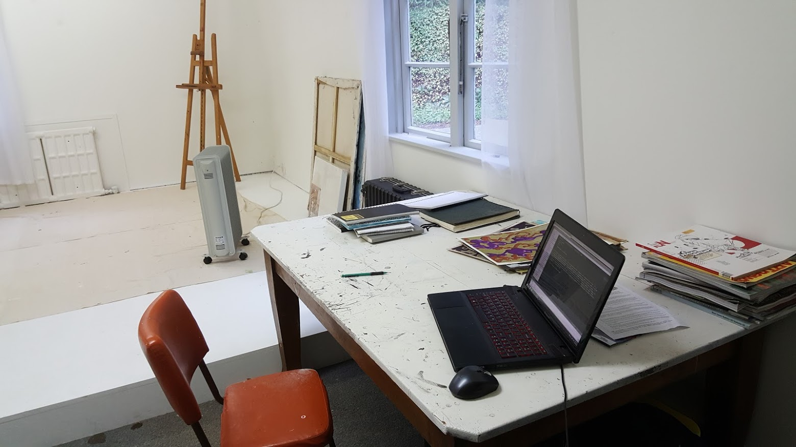

A Long Break From This
This is my first post in quite a while. A lot has happened since then. Blogging is clearly not a predisposition of mine. It’s a chore that in the moment I see little value in. With some distance I see it more clearly. It’s documentation, provides material for reflection, and adds context to current activity. All of which is useful. When I’m old and struggling to remember the life I’ve had, I’ll be grateful to myself if I take a few moments to write some shit down.
I just flipped through some old sketchbooks looking for ideas. It’s quite reassuring to see old themes still resonating with my creative thought. The things I’d like to do now are in a notebook from 18 years ago. Also reassuring are the many ideas and investigations I wanted to do I have done. Along with both of these are many scraps and clues on activity I had on my rich journey to the now. Reading back over those reinforces memories. It’s worth the effort.
I am here in a studio I rented in Shelly Bay. I moved in 8 weeks ago and have not been here since then. I don’t regret it. Getting the time to come here is difficult. I have maintained a regular creative practice and creative space my whole adult life, but this is the first time I’ve had a studio space which is not attached to my home. It feels like a serious step in the rig direction. It’s a good space, like a retreat. I hope I make good things here. The road to make good things is to make bad things, so here’s to making some of that too.
I’m going to make a few posts to go through some of the things I’ve been up to.
